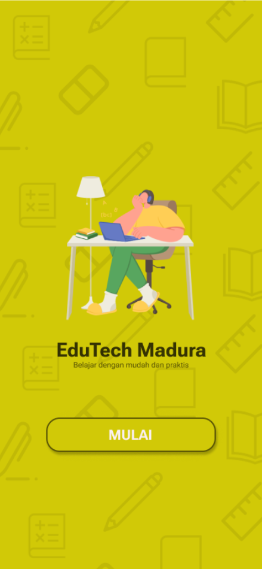
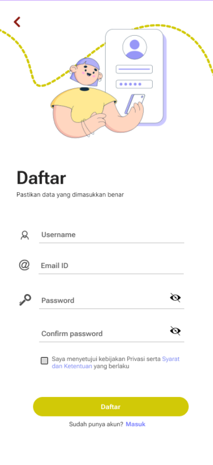
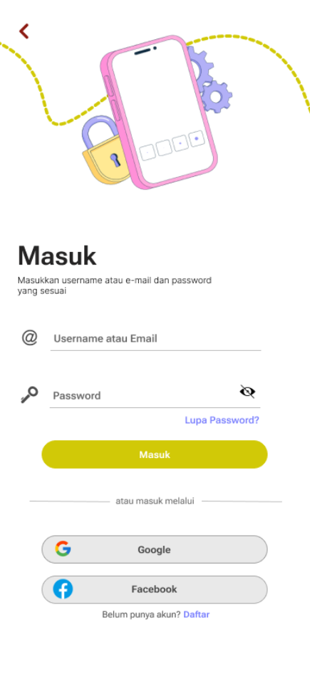
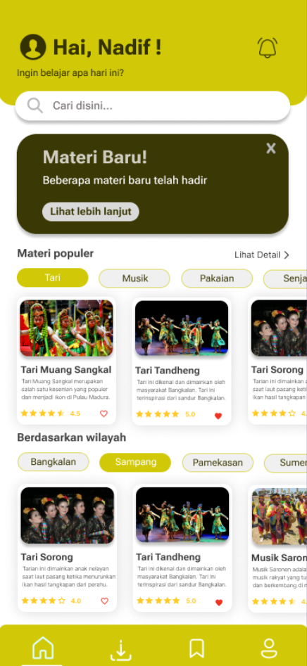
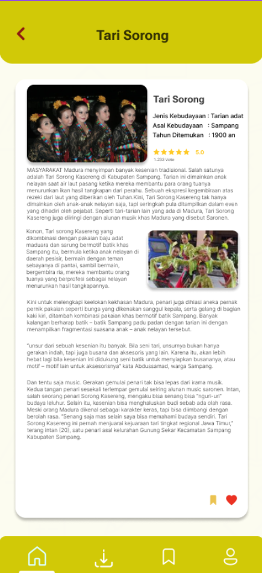
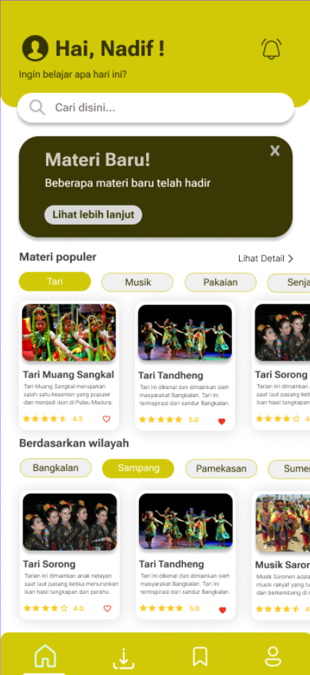

EduTech Madura is an interactive learning application designed to make education more accessible, engaging, and practical for students. The application features a modern and user-friendly interface, including authentication pages, personalized dashboards, search functionality, and categorized learning materials focused on Madurese culture and education. Click on the images to enlarge and explore the detailed mobile UI/UX design screens.